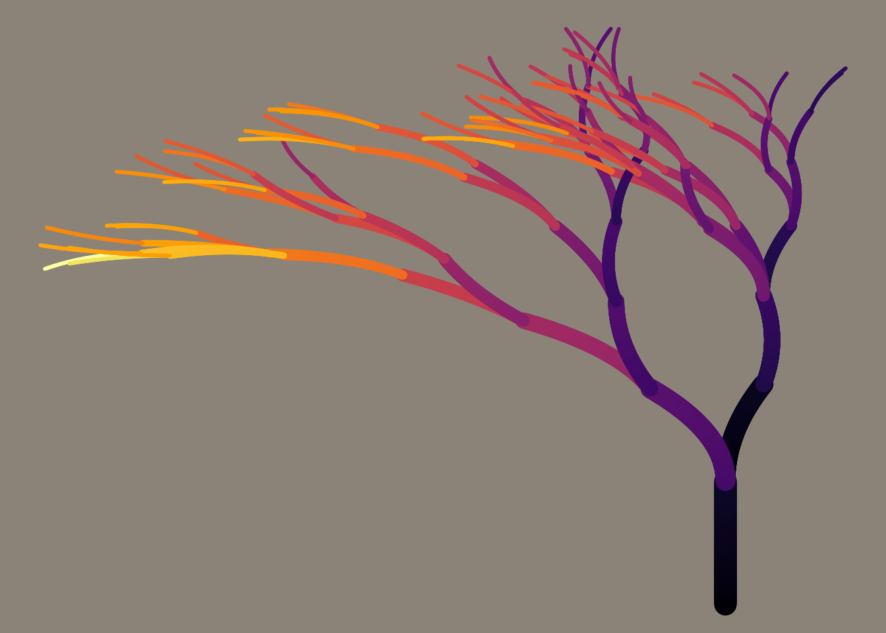
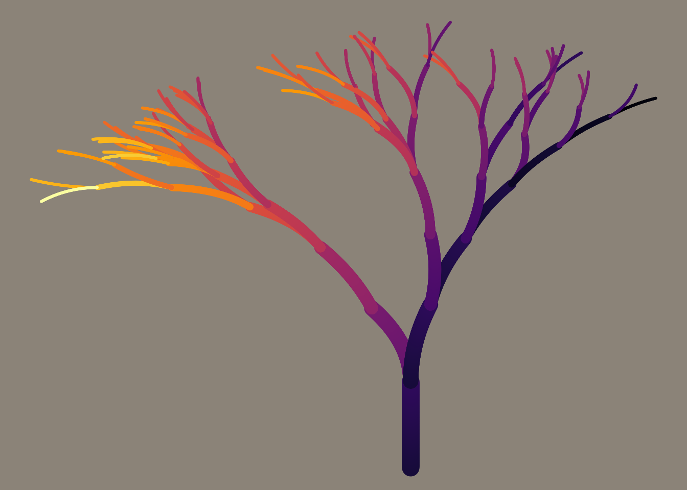

4 seed aRt
4.1 What is a seed?
"A random seed (or seed state, or just seed) is a number used to initialize a pseudorandom number generator."
4.1.1 flametree
Inspired by Danielle Navarro's aRt packages we illustrate, using art, what setting a random seed does.
## use
## devtools::install_github("djnavarro/flametree")
## to install
library(flametree)To grow the flametree we use the flametree_grow() function which has an argument seed. Using this we can grow any number of unique flametrees!
## R release date = 29 February 2000
## so set seed = 20000229
flametree <- flametree_grow(seed = 20000229)
flametree_plot(tree = flametree) 
## The year of lockdowns 2020
flametree <- flametree_grow(seed = 2020)
flametree_plot(tree = flametree) 
4.1.1.1 Grow your own tree
4.1.2 Thorns
What about thorn02?
## required packages
pkgs <- c("Rcpp","ggplot2","ggforce","voronise","dplyr","here")
for(i in 1:length(pkgs)) if(!require(pkgs[i])) install.packages(pkgs[i])
## This isn't a package so we source the code files from GitHub
## and create the directory structure the function expects
## .cpp file needed
dir.create("../source")
dir.create("../image")
download.file("https://raw.githubusercontent.com/djnavarro/thorn02/master/source/thorn_02.cpp",destfile = "../source/thorn_02.cpp")
devtools::source_url("https://raw.githubusercontent.com/djnavarro/thorn02/master/source/thorn_02.R")The thorn02() function we've just sourced has one argument: seed.
## using the worst password in the world
thorn02(seed = 1234)## glasses of wine I had last night
thorn02(seed = 3)## R release date = 29 February 2000
## so set seed = 20000229
thorn02(seed = 20000229)